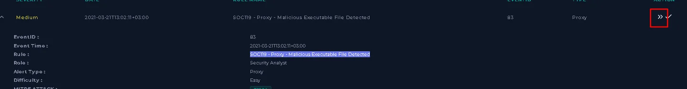
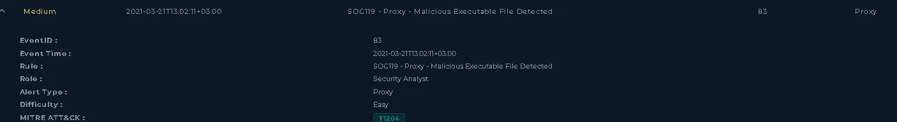
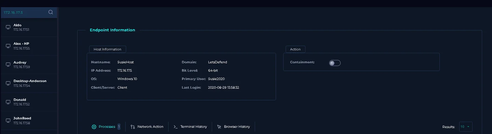
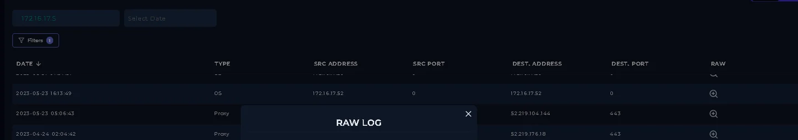
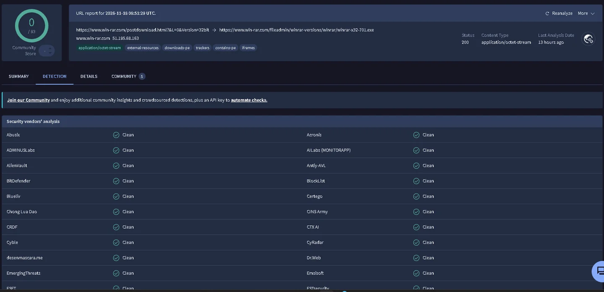
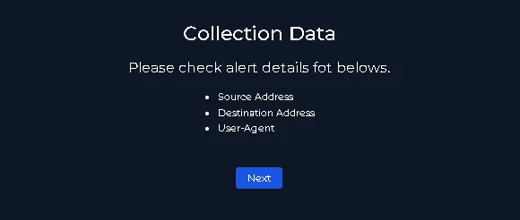
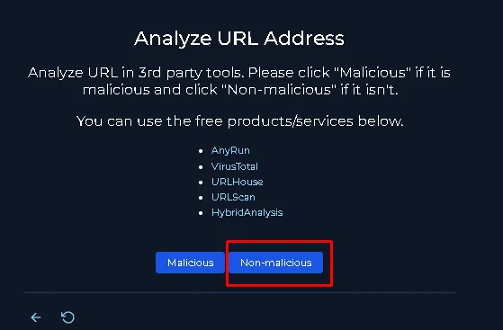
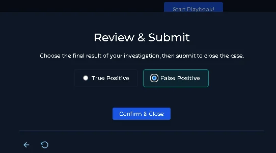

SOC119 · Proxy: Malicious Executable File Detected
- Categoria
- Malware
- Caso
- SOC119
- Registro
- Falso positivo
Resumo
Análise de alerta de proxy sobre download de um arquivo executável.
Passo a passo da investigação
Registro e análise do alerta
Iniciamos a análise do alerta abrindo um ticket.

Para investigar o alerta, consultamos o Endpoint Security, o Log Management e o VirusTotal.

Verificação no Endpoint Security
Pesquisamos pelo endereço IP 172[.]16[.]17[.]5 no Endpoint Security.

Não identificamos processos maliciosos em execução no dispositivo durante a verificação.
Análise no Log Management
Em seguida, consultamos o endereço IP 172[.]16[.]17[.]5 no Log Management.

A análise indicou uma solicitação relacionada ao WinRAR. O registro
apresentava os seguintes dados: - Processo:
chrome.exe - URL solicitada:
https://www.win-rar.com/postdownload.html?&L=0&Version=32bit -
Ação do dispositivo: Permitida - Processo
pai: explorer.exe - MD5 do processo
pai: 8b88ebbb05a0e56b7dcc708498c02b3e - IP
de destino: 51[.]195[.]68[.]163
Verificação no VirusTotal
Pesquisamos a URL do WinRAR no VirusTotal.

Os resultados indicaram que o arquivo instalado era o WinRAR legítimo, sem detecção de vírus.
Playbook


Conclusão
A URL analisada é utilizada no processo padrão de instalação do WinRAR. No Endpoint Security, não foram identificados processos maliciosos no dispositivo com o IP 172[.]16[.]17[.]5. No Log Management, identificamos a comunicação com o IP de destino 51[.]195[.]68[.]163, que também foi consultado no VirusTotal, sem indicação de atividade maliciosa nos resultados analisados. Com base nas verificações realizadas, classificamos o alerta como falso positivo. Não foram encontrados indícios de comprometimento do dispositivo durante esta análise.

Exercício simulado. Algumas capturas foram recortadas ou tiveram campos ocultados.